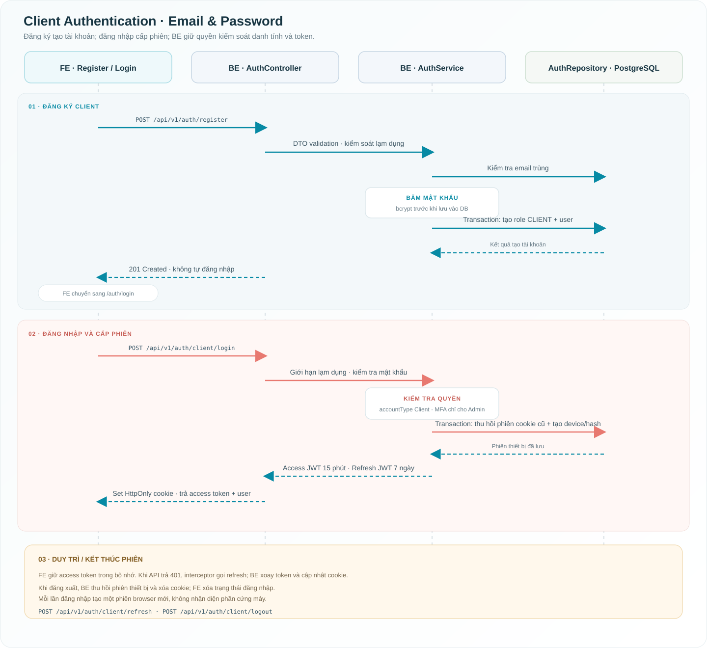
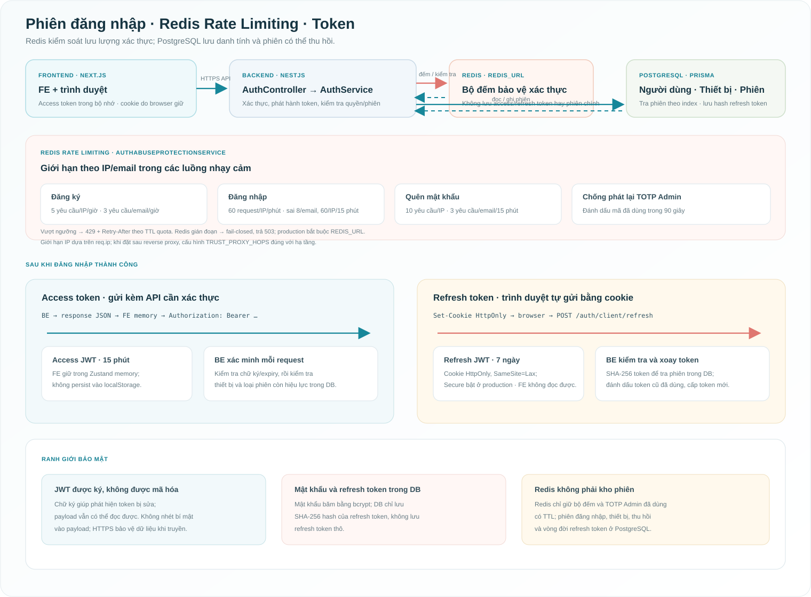
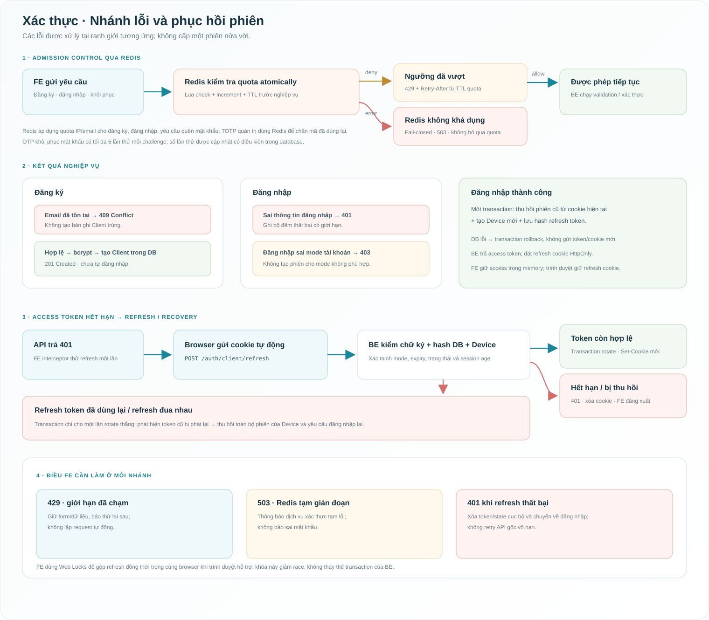
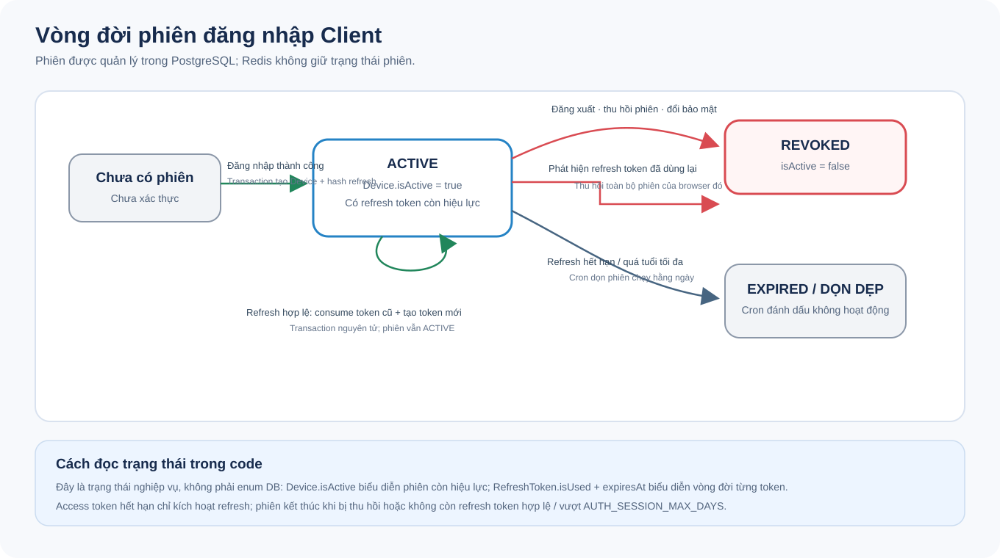
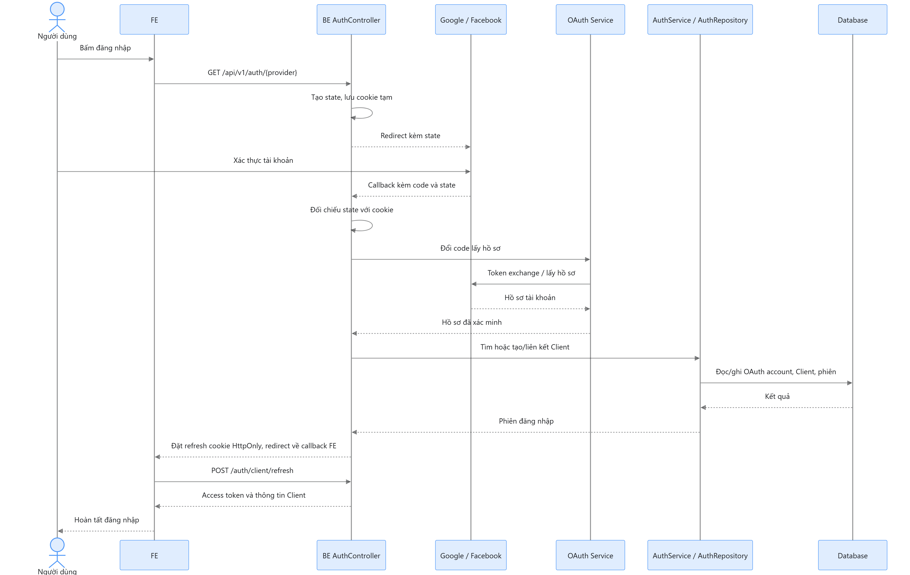
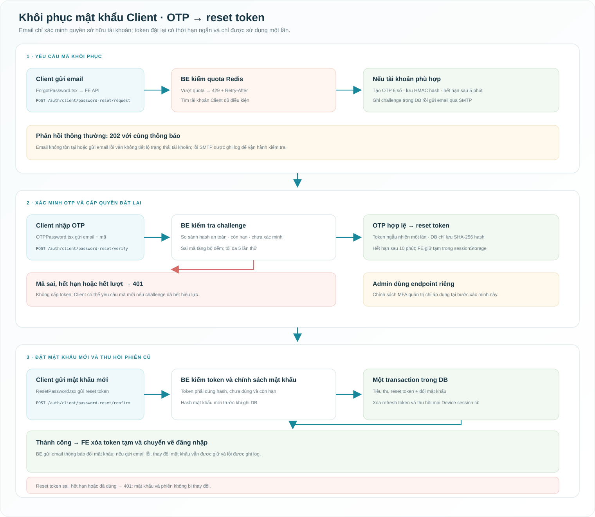

TEDDYPET · CLIENT IDENTITY
Đăng ký & đăng nhập
Một luồng xác thực Client dùng chung cho đăng nhập thông thường và OAuth Google/Facebook. Backend quản lý danh tính và phiên; tài khoản quản trị không thể đăng nhập qua OAuth khách hàng.
Detailed note, written in Vietnamese. The English case study is the summary of this page. Authentication & Sessions → · Xác thực & Phiên đăng nhập →
Nhà cung cấp xác thực danh tính; TeddyPet cấp phiên ứng dụng.
Khách hàng có thể đăng ký/đăng nhập bằng email và mật khẩu hoặc dùng Google/Facebook. BE xác thực tài khoản và quản lý phiên; Redis giới hạn lạm dụng ở các luồng xác thực, còn FE chỉ giữ access token trong bộ nhớ.
ĐĂNG KÝ & ĐĂNG NHẬP THÔNG THƯỜNG
Tạo tài khoản trước, sau đó đăng nhập để mở phiên.
Đăng ký thành công chưa tự đăng nhập. Lần đăng nhập tiếp theo xác thực mật khẩu và loại tài khoản ở BE.

KIẾN TRÚC PHIÊN & GIỚI HẠN LẠM DỤNG
Redis bảo vệ xác thực; database quản lý phiên.
Mỗi lần đăng nhập tạo một phiên riêng trong database; đây là phiên trình duyệt, không phải định danh phần cứng của máy.

NHÁNH LỖI & PHỤC HỒI
Hạn chế request, lỗi xác thực và refresh bị từ chối.
Sơ đồ thể hiện cách BE fail-closed khi Redis lỗi, rollback nếu DB không tạo được phiên và cách FE kết thúc phiên hết hạn.

VÒNG ĐỜI PHIÊN
Refresh token được xoay; phiên có thể thu hồi và dọn dẹp.
Sơ đồ phân biệt vòng đời của một phiên trình duyệt với vòng đời của từng refresh token.

LUỒNG OAUTH
Từ nút đăng nhập đến phiên Client.
Hai nhà cung cấp dùng chung bước tạo tài khoản/liên kết và cấp phiên ở Backend. Đây là chuyển hướng trình duyệt và callback OAuth, không phải webhook.

KHÔI PHỤC MẬT KHẨU CLIENT
OTP xác minh email; reset token ngắn hạn thu hồi phiên cũ.
Request, verify và confirm là ba bước riêng. BE không tiết lộ email có khớp tài khoản hay không.

DUY TRÌ PHIÊN
Các thao tác sau khi đăng nhập.
01 Làm mới phiên
Khi API trả 401, Axios interceptor gọi endpoint refresh bằng cookie, BE xoay refresh token và FE cập nhật access token.
02 Đăng xuất
FE gọi logout; BE thu hồi phiên thiết bị và xóa refresh cookie. FE xóa trạng thái đăng nhập cục bộ.
Các file chính theo luồng BE và FE
Backend · NestJS
auth.controller.ts— route đăng ký, đăng nhập, refresh, logout và OAuth callbackauth.dto.ts— quy tắc kiểm tra dữ liệu đăng ký/đăng nhậpauth.service.ts— xác thực, cấp/luân chuyển phiên và dọn phiên hết hạn định kỳauth.repo.ts— transaction tạo/đổi phiên, lưu tài khoản, thiết bị và refresh-token hashauth-abuse-protection.service.ts— quota Redis nguyên tử, fail-closed và chống phát lại TOTP quản trịauth.module.ts— đăng ký controller và các service xác thựcidentity.prisma,.env.example— mô hình thiết bị/refresh token và cấu hình ngưỡng xác thựcjwt.strategy.ts,jwt-auth.guard.ts— xác minh access token cho route cần phiênforgot-passwords.dto.ts,forgot-passwords.service.ts,forgot-passwords.repo.ts— khôi phục mật khẩu qua OTPgoogle-oauth.service.ts,facebook-oauth.service.ts— giao tiếp với nhà cung cấp OAuth
Frontend · Next.js
auth/register/page.tsx,auth/login/page.tsx— route hiển thị trang đăng ký/đăng nhậpRegister.tsx,Login.tsx— biểu mẫu, kiểm tra dữ liệu và điều hướngauth.api.ts,api-contracts/generated.ts— gọi API và dùng kiểu request từ OpenAPIapi-version.ts,api/index.ts— tạo endpoint, gửi Bearer token và tự refresh phiênuseAuthStore.ts— access token trong bộ nhớ, thông tin hiển thị được lưu riêngauth/oauth/callback/page.tsx,OAuthCallback.tsx— hoàn tất phiên sau khi Google/Facebook chuyển về FEForgotPassword.tsx,OTPPassword.tsx,ResetPassword.tsx— các màn hình khôi phục tài khoản
ĐIỂM THIẾT KẾ
“BE là nguồn xác thực và quản lý vòng đời phiên. FE điều phối biểu mẫu, giữ access token trong bộ nhớ và dùng refresh cookie HttpOnly để duy trì phiên Client.”